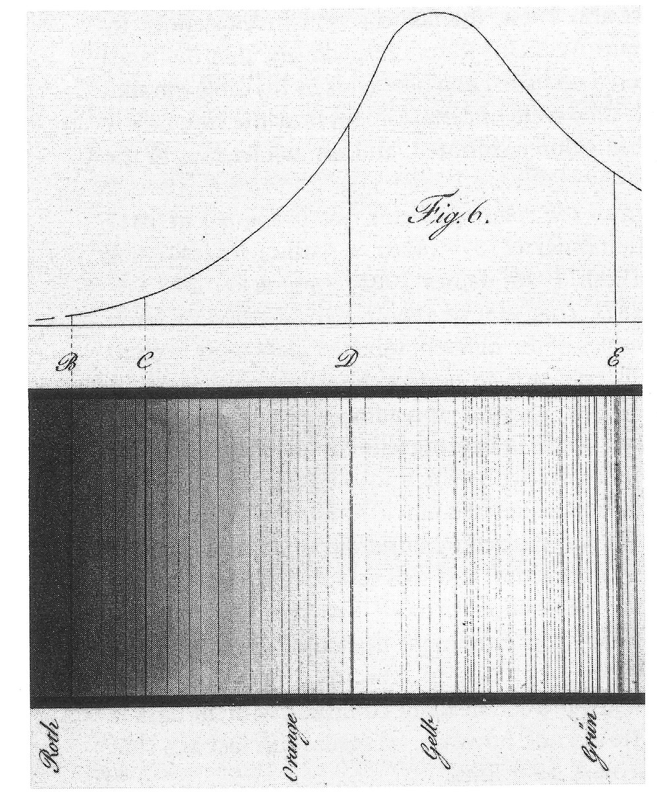
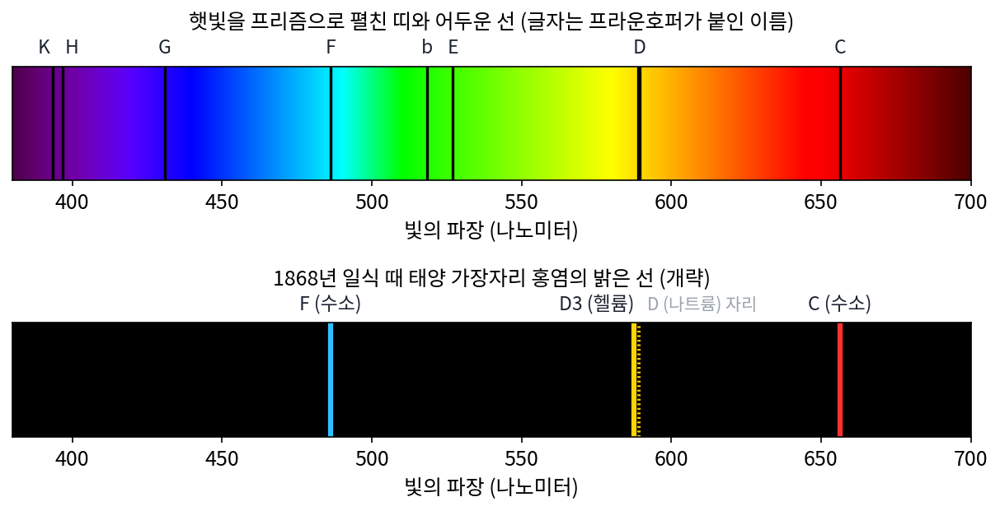
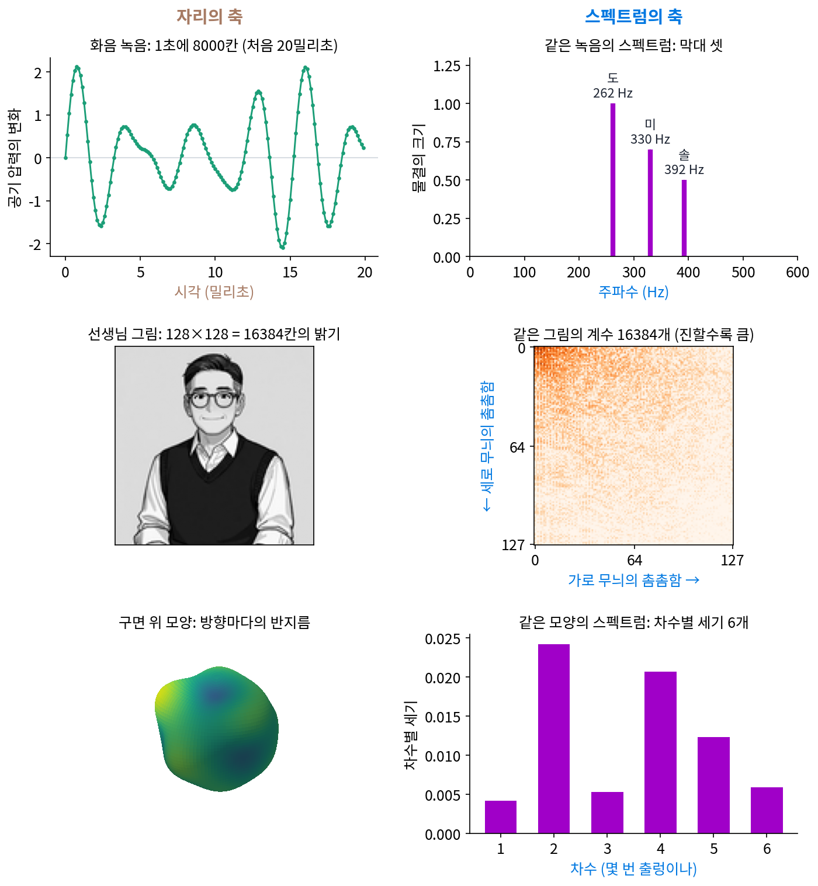
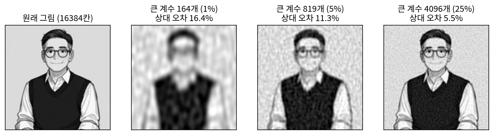
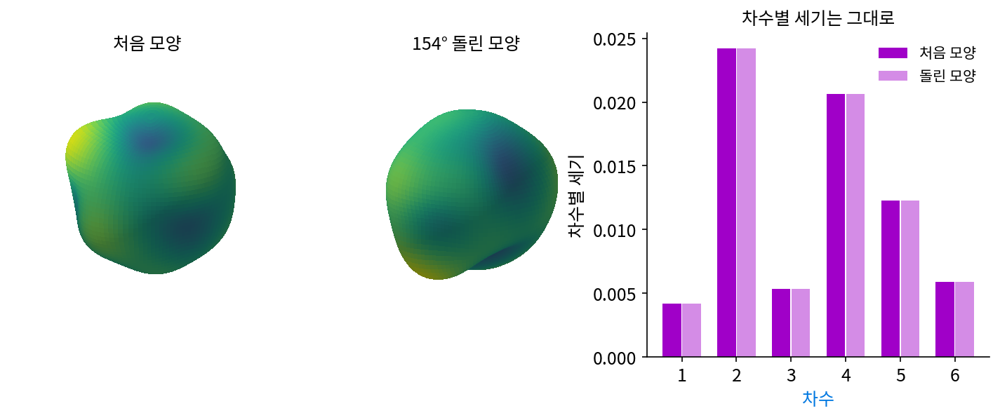

머리말: 스펙트럼으로 정보를 보기
차원이 다른 세 가지 정보
휴대폰으로 녹음한 노래 한 소절, 사진 한 장, 일기예보에 나오는 지구 온도 지도를 떠올려 보자. 컴퓨터 안에서 셋은 모두 숫자의 묶음이다. 녹음은 마이크가 잰 공기 압력을 시각마다 한 줄로 늘어놓은 숫자여서, 1초에 8000번 재면 1초에 숫자 8000개가 나온다. 사진은 가로·세로로 늘어선 칸마다의 밝기이고, 128 × 128 칸이면 숫자 16384개다. 온도 지도는 지구 표면의 지점마다 잰 온도다. 줄 하나, 평면 하나, 공 모양의 표면 하나처럼, 숫자가 놓인 바탕의 모양이 셋 다 다르다.
이 숫자들을 그대로 들여다봐서는 알 수 있는 것이 적다. 이 책에서 처음 쓸 녹음은 피아노 건반의 도·미·솔을 함께 누른 화음을 흉내 낸 것인데, 그 녹음의 처음 열 칸은 0, 0.535, 1.036, 1.469, 1.807, 2.030, 2.125, 2.088, 1.924, 1.648이다. 이 열 개를 보고, 또는 8000개를 다 보고 어떤 음이 몇 개 섞였는지 말할 수 있을까? 사진에서 칸 하나의 밝기는 그 칸이 얼굴인지 배경인지 말해 주지 않고, 지구 온도 지도의 한 지점은 그 온도가 계절 탓인지 대륙 탓인지 말해 주지 않는다.
그런데 사람의 귀는 화음을 듣자마자 「음이 셋」이라고 안다. 귀는 공기 압력을 시각마다 적어 두는 대신, 빠르게 떨리는 성분과 느리게 떨리는 성분이 각각 얼마나 센지를 듣는다. 같은 정보를 다른 축으로 다시 적은 것이다. 그렇다면 그림이나 지구 표면처럼 차원이 다른 정보도 귀가 소리를 듣듯이 다시 적어서, 셋을 같은 방법으로 볼 수 있을까? 이 책은 「차원이 다른 정보를 같은 방법으로 볼 수 있을까」라는 물음에서 출발한다.
역사: 햇빛을 색깔마다 펼치기
같은 정보를 다른 축으로 펼쳐 숨은 성분을 찾아낸 첫 사례는 소리가 아니라 빛이었다. 1672년 뉴턴(Isaac Newton)은 학술지 『철학 회보(Philosophical Transactions)』에 실린 편지 「빛과 색에 관한 새 이론」에서, 어두운 방의 덧문에 작은 구멍을 뚫고 들어온 햇빛을 프리즘에 통과시킨 실험을 적었다. 둥근 구멍으로 들어온 빛이 벽에는 길쭉한 색깔 띠로 맺혔다. 뉴턴은 이 「색깔 있는 스펙트럼(coloured Spectrum)」의 길이가 폭의 다섯 배쯤 된다고 쟀고, 흰 햇빛이 굴절하는 정도가 다른 여러 빛의 섞임이라고 결론지었다. 라틴어 spectrum 은 원래 「눈앞에 나타난 모습, 환영」을 뜻하는 말이다.
띠를 더 꼼꼼히 들여다본 사람들은 그 안에서 이상한 것을 보았다. 1802년 영국의 울러스턴(William Hyde Wollaston)은 햇빛의 띠 곳곳에 어두운 선 몇 개가 있다고 적었지만, 색과 색 사이의 경계쯤으로 여기고 더 파고들지 않았다. 1814년 독일의 유리 기술자 프라운호퍼(Joseph von Fraunhofer)는 렌즈 유리의 굴절률을 정밀하게 재려고 프리즘 뒤에 망원경을 단 장치를 만들다가 같은 선을 다시 찾아냈다. 그는 570개가 넘는 어두운 선의 자리를 지도로 그렸고, 가장 뚜렷한 것들에 A부터 K까지 글자를 붙였다(어느 글자까지가 프라운호퍼 자신이 붙인 것인지는 자료마다 조금 엇갈린다). 지금도 그 이름을 쓴다.

선이 무엇인지는 반세기 가까이 수수께끼였다. 프랑스의 철학자 콩트(Auguste Comte)는 1835년 『실증 철학 강의』 19강에서, 별에 대해 우리는 모양과 거리와 움직임은 알 수 있어도 화학 성분은 어떤 방법으로도 끝내 알 수 없을 것이라고 썼다. 별에 가서 물질을 떠 올 수 없으니 그럴 만한 판단이었다.
그 판단은 24년 만에 뒤집혔다. 1859년 하이델베르크의 키르히호프(Gustav Kirchhoff)는 화학자 분젠(Robert Bunsen)과 함께 불꽃에 넣은 원소마다 정해진 자리에 밝은 선이 생기는 것을 연구하던 중, 나트륨을 태운 불꽃의 밝은 노란 선 두 개가 햇빛의 어두운 선 D와 같은 자리라는 것에 주목했다. 햇빛을 나트륨 불꽃에 통과시키면 불꽃의 빛이 어두운 선을 메울 것으로 기대했는데, 선은 도리어 더 어두워졌다. 키르히호프는 원소가 내는 빛의 자리와 빨아들이는 빛의 자리가 같다고 보고, 태양의 바깥 대기에 나트륨이 있다고 결론지었다. 어두운 선의 자리가 원소의 지문이 된 것이다.

지문으로 아직 모르는 원소를 찾은 일도 있다. 1868년 8월 18일 인도 군투르에서 개기일식을 관측하던 프랑스의 장센(Jules Janssen)은 달에 가린 태양 가장자리에서 솟는 홍염의 빛을 펼쳐, 파장 587.49나노미터 근처의 밝은 노란 선을 보았다. 나트륨의 D 선과 가깝지만 같은 자리가 아니었다. 영국의 로키어(Norman Lockyer)도 같은 선을 관측해, 나트륨의 두 선 D1·D2 곁에 있다고 D3이라 불렀다. 로키어는 화학자 프랭클랜드(Edward Frankland)와 함께 지구에서 아직 찾지 못한 원소의 선일 수 있다고 보고, 그리스어 「태양(helios)」에서 따온 헬륨이라는 이름을 붙였다. 그래도 확신은 없었다. 로키어 자신도 다른 자리에서는 지구에서 아직 못 본 나트륨의 셋째 선일지 모른다고 했고, 프랭클랜드는 새 원소라는 생각에 미심쩍어했다고 전해진다. 지구에서 헬륨을 따로 얻어 낸 것은 27년 뒤인 1895년, 스코틀랜드의 램지(William Ramsay)가 우라늄 광물을 산으로 처리해 나온 기체에서였다.
햇빛을 밝기 하나로만 재면 태양이 얼마나 밝은지밖에 모르지만, 색깔마다(빛의 파장마다) 세기를 펼치자 태양에 무엇이 있는지가 보였다. 숫자는 그대로인데 축을 바꿨을 뿐이다. 뉴턴의 낱말 spectrum 은 그 뒤 빛을 넘어, 어떤 신호든 성분으로 나눠 성분마다의 세기를 늘어놓은 것을 가리키게 되었다.

지금은 스마트폰에 끼우는 분광기도 있잖아요. 어두운 선이 보이면 원소 목록에 대 보면 끝인데, 그게 왜 반세기나 걸렸어요?

그 목록이 없었어요. 원소마다 어느 파장에 선이 생기는지는 1859년 무렵 키르히호프와 분젠이 불꽃에 원소를 하나씩 넣어 태워 보면서 모은 거예요. 프라운호퍼는 선 570여 개를 지도로 그렸지만, 맞대 볼 기준이 없었죠.

그럼 콩트가 별의 성분은 끝내 모른다고 한 것도 그때로선 이상한 말이 아니었네요.

음, 그런데 헬륨은 선을 1868년에 봤는데 27년이나 걸렸잖아요. 그땐 목록이 있었는데요.

목록에 없는 선이었으니까요. 지구에서 그 기체를 따로 얻어 불꽃에 태워 볼 수가 없었어요. 그래서 로키어 자신도 나트륨의 셋째 선일지 모른다고 망설였고요.

잠깐, 빛은 프리즘이 파장마다 펼쳐 줬잖아요. 녹음한 숫자 8000개나 사진의 칸 16384개는 무엇에 통과시켜야 성분마다 펼쳐져요?
같은 정보, 두 가지 축
빛에서 한 일을 처음에 꺼낸 세 정보에 해 보자. 셋 다 직접 만든 것이라 답을 미리 안다. 녹음은 도·미·솔 세 음을 물결의 크기(진폭, 물결이 0에서 오르내리는 높이) 1.0, 0.7, 0.5로 섞은 1초짜리 화음이다(주파수는 피아노 건반의 261.63, 329.63, 392.00 Hz를 정수로 반올림한 262, 330, 392 Hz). 사진은 이 책의 대화에 나오는 선생님 그림을 회색으로 바꿔 128 × 128 칸으로 줄인 것이다. 지구 온도 지도 대신에는 공의 표면을 방향마다 반지름을 조금씩 늘이거나 줄여 만든 울퉁불퉁한 모양을 쓴다. 지구 표면처럼 바탕이 공 모양의 표면이고, 방향마다 숫자 하나(반지름)가 붙어 있다.

화음. 왼쪽 위 그림은 녹음의 처음 20밀리초, 칸으로 160개인데, 물결이 오르내리지만 모양이 들쭉날쭉해서 음이 몇 개인지 읽어 내기 어렵다. 같은 8000칸을 「1초에 몇 번 떨리는 물결이 얼마나 들어 있나」로 다시 적으면 오른쪽 위 그림이 된다. 0 Hz부터 4000 Hz까지 4001개의 주파수 가운데 물결의 크기가 0.001을 넘는 것은 262, 330, 392 Hz 세 개뿐이고, 그 크기는 1.000, 0.700, 0.500으로 섞을 때 쓴 값이 그대로 나온다. 녹음 전체의 에너지(값의 제곱합)도 막대 세 개에 모두 들어 있어서, 숫자 8000개를 보고는 말할 수 없던 「음이 셋」이 막대 셋으로 보인다.
선생님 그림. 가운데 줄 왼쪽은 칸 16384개의 밝기다. 오른쪽은 같은 그림을 가로·세로로 촘촘함이 다른 코사인 무늬 16384가지의 합으로 다시 적었을 때, 무늬마다 곱하는 수(계수)의 크기다. 칸 수와 계수 수가 같고, 칸 밝기의 제곱합과 계수의 제곱합도 8573.11로 같다. 정보를 하나도 버리지 않고 축만 바꿨는데도, 오른쪽 그림은 왼쪽 위 구석, 굵은 무늬 쪽만 진하다. 가장 굵은 16 × 16 = 256가지 무늬(전체의 1.6%)의 계수에 에너지의 97.0%가 들어 있다.
그러면 큰 계수만 남기고 나머지를 0으로 지워도 그림이 남을까? 크기 순으로 계수를 1%(164개), 5%(819개), 25%(4096개)만 남겨 그림을 되살리면 아래와 같다. 그림 아래의 상대 오차는 되살린 그림과 원래 그림의 칸별 차이를 제곱해 더한 값의 제곱근을, 원래 그림의 칸 밝기를 제곱해 더한 값의 제곱근으로 나눈 비율이다.

계수 1%로 상대 오차 16.4%, 5%로 11.3%, 25%로 5.5%인데, 계수 대신 칸을 골라 남기면 어떨까? 가장 밝은 칸 5%만 남기고 나머지 칸을 0으로 지우면 상대 오차가 95.3%, 25%를 남겨도 42.8%다. 칸의 축에서는 정보가 모든 칸에 고루 퍼져 있지만, 무늬의 축에서는 소수의 계수에 몰려 있다.
큰 계수만 남기고 나머지를 지우는 일은 가장 기본적인 꼴의 손실 압축 (되살린 것이 원래와 조금 달라도 되는 압축 / lossy compression)이다. 손실 함수의 손실과는 다른 말로, 버려서 잃는 정보를 가리킨다. 선생님 그림의 계수 1%만 적어 보내면 받는 사람은 윤곽이 보이는 그림을 되살리지만, 지운 99%는 되찾을 수 없다. 휴대폰 사진을 담는 JPEG 파일도 이 생각에서 출발한다. JPEG 는 그림을 8 × 8 칸 조각으로 나눠 조각마다 2차원 코사인 계수로 바꾸고(이산 코사인 변환, DCT), 계수를 정해 둔 간격으로 반올림한다. 가는 무늬의 계수일수록 간격을 넓게 잡아서 작은 계수는 대부분 0이 되고, 0이 길게 이어진 곳은 짧게 적을 수 있어 파일이 작아진다. 음악을 담는 MP3 파일은 소리를 짧은 구간으로 잘라 구간마다 주파수 성분으로 바꾼 뒤, 큰 소리에 가려 귀에 들리지 않는 성분은 거칠게 적거나 아예 적지 않는다. 두 형식은 계수의 크기만 보지 않고 지운 계수 때문에 달라진 그림과 소리를 사람의 눈과 귀가 알아채는지를 함께 따져 남길 계수를 고르지만, 축을 바꾼 뒤 소수의 계수만 적는다는 점은 선생님 그림에서 한 일과 같다.
구면 위 모양. 아래 줄 왼쪽의 모양은 공 표면의 방향 2000곳에서 잰 반지름으로 적혀 있고, 반지름은 가장 부푼 곳이 1.207, 가장 눌린 곳이 0.793이다. 이 2000개의 숫자를, 공 표면에서 한 번 출렁이는 무늬, 두 번 출렁이는 무늬, … 여섯 번 출렁이는 무늬의 합으로 다시 적으면 계수가 49개 나온다. 출렁이는 횟수(차수)가 같은 무늬끼리 계수의 제곱을 더하면 차수마다 세기가 하나씩, 차수 0의 평균 크기를 빼면 오른쪽의 막대 6개가 된다. 이 모양은 두 번 출렁이는 성분(0.0242)과 네 번 출렁이는 성분(0.0207)이 가장 세다. 공 위의 무늬는 평면의 코사인 무늬와 모양이 다르지만, 하는 일은 같다.
공 위의 정보를 굵은 출렁임의 계수 몇 개로 적는 방법은 3D 렌더링에서 실제로 쓰인다. 게임 화면에서 물체 겉의 한 점이 얼마나 밝은지 알려면 그 점으로 사방에서 들어오는 빛을 모두 더해야 하는데, 방향마다 들어오는 빛의 세기도 방향마다 숫자 하나가 붙은 공 위의 정보다. 2001년 라마무르티(Ravi Ramamoorthi)와 한라한(Pat Hanrahan)은 무광 물체라면 이 빛을 평균(차수 0)과 한 번, 두 번 출렁이는 무늬, 모두 9개의 계수만으로 적어도 밝기의 평균 오차가 약 1%라는 것을 보였다. 겉면이 향한 방향마다 받는 빛의 양을 이렇게 적어 둔 것을 복사 조도 지도(irradiance map)라 부른다. 게임 엔진 유니티(Unity)는 장면 곳곳에 빛을 재어 두는 점(라이트 프로브)을 놓고, 점마다 빨강·초록·파랑 각각 계수 9개, 모두 27개의 수로 그 점에 들어오는 빛을 적어 둔다. 방 하나의 빛을 계수 9개로 적는 계산은 「구면 조화」에서 직접 해 본다.
바탕이 줄이든 평면이든 공 표면이든, 정보를 물결 모양의 성분으로 나누고 성분마다의 세기를 늘어놓을 수 있다. 이렇게 정보를 물결 모양의 성분으로 나눴을 때 성분마다의 세기(계수 크기의 제곱. 화음의 막대처럼 제곱하기 전의 크기나, 선생님 그림처럼 계수 전체를 늘어놓기도 한다)를 그 정보의 스펙트럼 (성분마다의 세기 / spectrum)이라 한다. 성분이 얼마나 촘촘히 출렁이는지를 나타내는 수, 소리라면 1초에 떨리는 횟수, 그림이라면 한 폭에 든 무늬의 줄 수를 주파수라 부르고, 그림에서는 따로 공간 주파수라고도 한다. 시리즈의 최적화 책에 나오는 「스펙트럼 노름」(행렬의 가장 큰 특잇값)도 뿌리가 같은 말이다. 행렬을 방향마다 몇 배로 늘이는지의 묶음을 그 행렬의 스펙트럼이라 부르고, 그 가운데 가장 큰 것이 스펙트럼 노름이다.
ML에서: 신경망 둘레의 스펙트럼
ML 코드에서도 스펙트럼의 축은 흔하다. 음성 인식 모델 다수는 녹음의 숫자를 그대로 받지 않고, 짧은 구간마다 주파수별 세기를 구해 사람 귀의 눈금에 맞춰 묶은 그림(스펙트로그램)을 입력으로 받는다. 신경망에 넣기 전에 축부터 바꾸는 것이다. 트랜스포머가 토큰의 자리 번호를 알려 줄 때 쓰는 사인·코사인 위치 인코딩과 RoPE, 3차원 장면을 신경망으로 적는 NeRF 의 위치 인코딩, 3D 가우스 스플래팅이 보는 방향마다 다른 색을 적는 방법도 모두 이 책의 축 위에 선다. 각각이 어느 축을 왜 고르는지는 「에피사이클」, 「구면 조화」, 「스펙트럼 편향」에서 계산해 본다.
이 책의 약속: 몇 차원이든 스펙트럼으로
이 책을 처음 구상할 때 적어 둔 목표는 한 줄이었다. 「에피사이클 애니메이션의 2차원 버전, 3차원 버전을 각각 보여주면서 몇차원의 정보이건 스펙트럼 관점으로 일반화가 가능하다는 것을 보여주는 것」. 에피사이클은 크기가 다른 원 여러 개가 서로의 끝에 매달려 돌면서 그림을 그려 내는 장치다. 이 책은 그 장치를 두 방향으로 키운다. 「에피사이클」에서는 펜이 움직이는 공간의 차원을 올려, 평면에 글자를 그리던 화살표 사슬로 공간 속에서 꼬인 곡선을 그린다. 「n차원 그림 그리기」에서는 정보가 놓인 바탕의 차원을 올려, 1차원 소리, 2차원 그림, 공 표면 위의 모양을 같은 방법으로 성분 하나씩 더해 가며 그린다. 위의 세 그림 쌍이 그 약속의 예고편이다.
그런데 왜 이런 일이 가능할까? 답은 물결 모양의 성분을 아무렇게나 고르지 않았다는 데 있다. 화음 녹음을 0.125초 늦게 시작하면 8000칸의 값은 모두 바뀌고, 칸마다 값의 차이가 가장 큰 곳은 2.402나 된다. 그래도 막대 세 개의 높이는 1.000, 0.700, 0.500 그대로다(바뀐 것은 막대마다 물결의 출발 각도뿐이다). 공 위의 모양을 어떤 축으로 154° 돌리면, 차수 1 이상의 계수 48개 가운데 34개가 0.01 넘게 바뀌지만 차수별 세기 6개는 하나도 바뀌지 않는다.

녹음을 늦추는 일과 공을 돌리는 일은 정보를 옮길 뿐 내용은 바꾸지 않는 변환이고, 이런 변환을 대칭이라 부른다. 사인·코사인 물결은 시간을 미는 대칭과, 공 위의 출렁이는 무늬는 공을 돌리는 대칭과 맞물려 있어서, 정보를 밀거나 돌려도 성분마다의 세기가 흐트러지지 않는다. 바탕마다 대칭이 다르니 맞는 축도 다르다. 시간과 평면의 미는 대칭에는 사인·코사인, 공의 회전 대칭에는 구면 조화, 그물처럼 이어진 점들(그래프)의 이웃 관계에는 그 그물에 맞춘 고유한 무늬가 짝이다. 이 책의 줄기를 짧게 적으면 이렇다.
같은 정보도 다른 축으로 다시 적으면 다루기 쉬워지고, 어느 축이 알맞은지는 신호가 가진 대칭으로 정해진다. 시간을 밀어도 성질이 같은 소리에는 사인·코사인 축이, 돌려도 성질이 같은 지구 표면에는 구면 조화 축이 맞아서, 이 책은 소리(1차원), 사진(2차원), 지구 표면(구면)을 같은 방법으로 스펙트럼으로 본다.
이 책이 다루는 축은 모두 대칭에서 미리 정해지는 고정된 축이다. 데이터를 보고 축을 배우는 방법(주성분 분석, 딕셔너리 러닝 같은)은 다루지 않고, 맺음에서 「대칭이 없으면 축은 누가 고르나」라는 물음으로 남긴다.
책의 지도
책은 다섯 부로 나뉜다. 먼저 「같은 정보를 다른 축으로 다시 적는다」는 말을 벡터 세 칸짜리 예에서 시작해, 주기 함수를 사인·코사인 물결의 합으로 적는 푸리에 급수를 거쳐, 복소수의 돌아가는 화살표로 평면과 공간의 곡선을 그리는 에피사이클까지 간다(축을 바꿔 다시 적기). 다음은 컴퓨터가 실제로 다루는 칸으로 적은 신호다. 칸 N개를 계수 N개로 바꾸는 계산과 그것을 빨리 하는 법, 칸 간격이 너무 넓을 때 빠른 물결이 느린 물결로 둔갑하는 일, 전체 주파수만으로는 알 수 없는 「언제」를 함께 적는 법을 본다(칸으로 적은 신호). 그다음 이 책의 줄기인 「왜 하필 사인과 코사인인가」를 묻는다. 미는 대칭이 사인·코사인을 고르고, 대칭을 바꾸면 축이 바뀌고, 공의 회전 대칭은 구면 조화를 고르고, 그래서 바탕의 차원을 올려도 같은 방법으로 그림을 그릴 수 있다(대칭이 고르는 기저). 그 틀을 음성, 이미지, 빛을 세 숫자로 줄여 그리는 CG 렌더링, 그리고 시계열·영상·단층 촬영·그래프 같은 차원별 신호에 써 본다(예제). 마지막으로 신경망을 이 축에서 본다. 무한히 많은 물결을 셈 한 번으로 다루는 커널 함수와, 신경망이 왜 굵은 무늬부터 배우는가이다(신경망이 보는 스펙트럼).
flowchart TB
subgraph P1["축을 바꿔 다시 적기"]
direction LR
a1["기저"] --> a2["푸리에 급수"] --> a3["에피사이클"]
end
subgraph P2["칸으로 적은 신호"]
direction LR
b1["이산 푸리에 변환과<br/>고속 푸리에 변환"] --> b2["샘플링"] --> b3["시간과 주파수를 함께"]
end
subgraph P3["대칭이 고르는 기저"]
direction LR
c1["평행이동 대칭"] --> c2["대칭과 등변성"] --> c3["구면 조화"] --> c4["n차원 그림 그리기"]
end
subgraph P4["예제"]
direction LR
d1["음성"] --> d2["이미지"] --> d4["CG 렌더링"] --> d3["차원별 신호"]
end
subgraph P5["신경망이 보는 스펙트럼"]
direction LR
e1["커널"] --> e2["스펙트럼 편향"]
end
P1 --> P2 --> P3 --> P4 --> P5 --> z["맺음: 고정된 축에서 배우는 축으로"]
장마다 무엇에 막혀서 무엇을 묻는지를 한 줄씩 적으면 이렇다.
| 장 | 부 | 앞에서 막혀서 묻는 것 |
|---|---|---|
| 「기저: 같은 정보를 다른 축으로 다시 적기」 | 축을 바꿔 다시 적기 | 같은 숫자 묶음을 다른 축으로 다시 적는다는 것은 무슨 뜻일까. 축마다의 값은 어떻게 구하고, 축을 바꿔도 변하지 않는 것은 무엇일까 |
| 「푸리에 급수: 주기 함수를 물결의 합으로」 | 축을 바꿔 다시 적기 | 같은 모양으로 되풀이되는 함수라면 무엇이든 사인·코사인 물결의 합으로 적을 수 있을까. 꺾인 곳에서는 무슨 일이 생길까 |
| 「에피사이클: 돌아가는 화살표로 그림 그리기」 | 축을 바꿔 다시 적기 | 값이 둘, 셋씩 함께 바뀌는 펜 끝의 곡선도 물결로 적을 수 있을까. 화살표 몇 개면 글자 하나를 그릴까 |
| 「이산 푸리에 변환과 고속 푸리에 변환」 | 칸으로 적은 신호 | 이어진 함수 대신 칸 N개로 적은 신호라면 계수는 어떻게 구할까. 곱셈 N²번을 줄일 수는 없을까 |
| 「샘플링: 칸 간격과 에일리어싱」 | 칸으로 적은 신호 | 이어진 신호를 얼마나 촘촘히 재야 다시 살릴 수 있을까. 재는 간격이 너무 넓으면 무엇이 보일까 |
| 「시간과 주파수를 함께: 단시간 푸리에 변환과 웨이블릿」 | 칸으로 적은 신호 | 전체 스펙트럼은 「어떤 음이」는 알려 주지만 「언제」는 알려 주지 않는다. 둘을 함께 적으면 무엇을 치러야 할까 |
| 「평행이동 대칭: 왜 하필 사인과 코사인인가」 | 대칭이 고르는 기저 | 지금까지 쓴 축이 왜 하필 사인·코사인이었을까. 신호를 미는 대칭과 무슨 관계일까 |
| 「대칭과 등변성: 대칭을 바꾸면 기저가 바뀐다」 | 대칭이 고르는 기저 | 미는 대칭 말고 돌리기, 순서 바꾸기 같은 대칭이면 어떤 축이 나올까. 신경망에 대칭을 넣으려면 |
| 「구면 조화: 구 위의 푸리에」 | 대칭이 고르는 기저 | 지구 온도나 하늘의 밝기처럼 공 표면 위의 정보는 어떤 물결로 적을까 |
| 「n차원 그림 그리기: 바탕의 차원을 올려도 같은 일」 | 대칭이 고르는 기저 | 소리, 그림, 공 위의 모양을 같은 방법으로 성분 하나씩 더해 가며 그릴 수 있을까 |
| 「음성: 소리를 스펙트럼으로 듣기」 | 예제 | 같은 높이로 낸 「아」와 「이」는 스펙트럼의 어디가 다를까. 귀는 주파수를 어떤 눈금으로 들을까 |
| 「이미지: 그림을 스펙트럼으로 보기」 | 예제 | 그림의 스펙트럼에서 방향은 어떻게 보일까. 계수의 크기와 위상 가운데 무엇이 그림을 알아보게 할까 |
| 「CG 렌더링: 빛의 스펙트럼을 세 숫자로 줄여 그리기」 | 예제 | 질감과 그림자 같은 차이를 좁힌 뒤에도 CG 화면과 사진 사이에 남는 차이는 무엇일까. 화소마다 빛을 세 숫자로 계산하면 무엇을 잃고, 그 손실은 어떤 조명과 재질에서 드러날까 |
| 「차원별 신호: 시계열, 영상, 부피, 그래프」 | 예제 | 시간이 붙은 영상, 몸속의 부피, 그물처럼 이어진 점들에서도 같은 틀이 통할까 |
| 「커널: 무한히 많은 물결을 셈 한 번으로」 | 신경망이 보는 스펙트럼 | 물결 특징을 끝없이 늘리면 계산을 감당할 수 있을까. 두 입력의 닮은 정도를 재는 함수와 스펙트럼은 어떻게 이어질까 |
| 「스펙트럼 편향: 신경망은 굵은 무늬부터 배운다」 | 신경망이 보는 스펙트럼 | 신경망은 왜 가는 무늬를 늦게 배울까. 좌표를 물결로 펴서 넣으면 무엇이 달라질까 |
| 「맺음: 고정된 축에서 배우는 축으로」 | 맺음 | 대칭이 없거나 어설프게만 있는 데이터라면 축은 누가 골라야 할까 |
장마다 그 전까지의 방법이 막힌 곳에서 출발하므로 처음부터 차례로 읽기를 권한다. 이를테면 「평행이동 대칭」은 「푸리에 급수」와 「이산 푸리에 변환과 고속 푸리에 변환」에서 써 온 사인·코사인이 왜 하필 그 신호들의 축으로 쓰였는지를 되묻고, 「n차원 그림 그리기」는 「에피사이클」의 화살표 사슬과 「구면 조화」의 출렁이는 무늬를 한 화면에 모은다. 신경망 쪽 이야기가 먼저 궁금한 독자라면 「기저」와 「푸리에 급수」를 읽은 뒤 「커널」로 건너뛰어도 된다.
다른 권으로 가는 길잡이
앞의 세 부는 처음부터 차례로 읽는 흐름으로 썼다. 다른 권에 이미 집이 있는 개념이 이 책에 나오는 자리에서는 이 책만으로 따라올 수 있을 만큼 두세 문장으로 소개하고, 자세한 이야기는 그 책의 절로 잇는 길잡이 상자를 두었다. 길잡이는 건너뛰어도 이 책을 따라오는 데 지장이 없으며, 대표적인 길은 이렇다.
누구를 위한 책인가, 어떻게 읽나
고교 미분과 행렬 곱셈을 알고, 신경망을 파이토치로 한 번쯤 학습시켜 본 사람을 독자로 생각했다. 벡터의 내적, 복소수, 오일러 공식은 안다고 치지 않고 쓰는 자리에서 처음부터 세운다. 복소수는 「에피사이클」에서 평면의 화살표로 시작한다.
본문·표·그림·문제·위젯에 나오는 숫자는 모두 직접 돌린 코드에서 나온 값이고, 그 코드는 장마다 sources/<장 이름>/ 에 있다. 이 머리말의 화음, 선생님 그림, 공 위의 모양도 sources/preface/ 의 스크립트가 만들었고, 소리도 녹음 대신 스크립트로 합성했다. 사람 이름·연도·논문 제목은 원 논문이나 믿을 만한 자료로 확인했다. 푸리에 변환과 에피사이클의 역사에는 출처가 흐린 이야기가 많아서, 확인하지 못한 것은 「전해진다」라고 적거나 쓰지 않았다.
다루지 않는 것. 필터를 전자 회로로 만드는 법, 라플라스 변환과 z 변환 같은 공학 계산은 다루지 않는다. 데이터를 보고 축을 배우는 주성분 분석, 딕셔너리 러닝, 희소 코딩도 다루지 않는다. 이 책은 대칭이 정해 주는 축까지만 간다.
수식 색과 기호 표. 수식의 기호는 개념마다 정해 둔 색으로 칠했고, 수식 바로 아래에 기호마다 뜻을 적은 작은 표를 붙였다. 그리스 문자는 책에서 처음 나오는 자리에 읽는 법을 적었다. 기저 무늬를 적는 글자 ψ는 「프사이」라고 읽는다. 이 책에서 가장 자주 나오는 꼴, 신호를 기저 무늬의 합으로 다시 적는 식으로 보이면 이렇다.
신호의 값은 언제나 초록(x), 칸 번호와 시각은 갈색(n), 주파수는 파랑(k), 계수는 주황(ck), 기저 무늬는 보라(ψk)다. 위 그림들의 스펙트럼 막대에 쓴 자주색은 성분마다의 크기와 세기(계수 크기의 제곱)의 색이다. 같은 개념은 책 전체에서, 그리고 그림과 위젯 안에서도 같은 색이지만, 색을 구별하기 어렵다면 기호 표만으로도 읽을 수 있게 썼다.
위젯. 「직접 움직여 보기」 줄이 있는 자리에는 값을 바꿔 가며 결과를 바로 보는 위젯이 들어 있다. 소리를 내는 위젯은 「들어 보기」 단추를 누를 때만 소리를 낸다. 위젯에 「문제 N 불러오기」 단추가 있으면 그 문제의 값이 들어가므로, 손으로 푼 답을 위젯으로 맞춰 볼 수 있다.
연습문제와 함께 풀기. 개념 절 끝에는 문제가 세 계단으로 붙어 있다. 일상의 비유로 몸을 푸는 문제, 본문의 수학을 다른 각도에서 다시 확인하는 문제, 신경망에 이어 보는 문제다. 문제마다 아래에 세 사람이 그 문제를 실제로 풀며 틀리고 바로잡는 대화가 이어지는데, 대화를 읽기 전에 먼저 혼자 풀어 보길 권한다. 장의 마지막 페이지에는 그 대화에서 학생들이 실제로 틀린 곳을 「혼동하기 쉬운 점」 표로 모았다.
대화에 나오는 세 사람은 다음과 같다.
| 인물 | 소개 |
|---|---|
선생님 |
강의자. 정답을 먼저 말하는 대신 모순이 드러나는 질문을 던진다. 이 머리말에서 코사인 무늬로 다시 적은 그림의 주인이기도 하다. |
김민준 |
학부 3학년. ML 강의를 몇 개 들었고 softmax, numpy, PyTorch 과제를 해 본 수준이다. 코드로 먼저 돌려 보고 답이 빠르다. |
이서연 |
수학과 3학년. 해석학과 선형대수는 탄탄하지만 물리 감각은 약하다. 이상한 결과를 스스로 알아채고 조건과 범위를 따진다. |